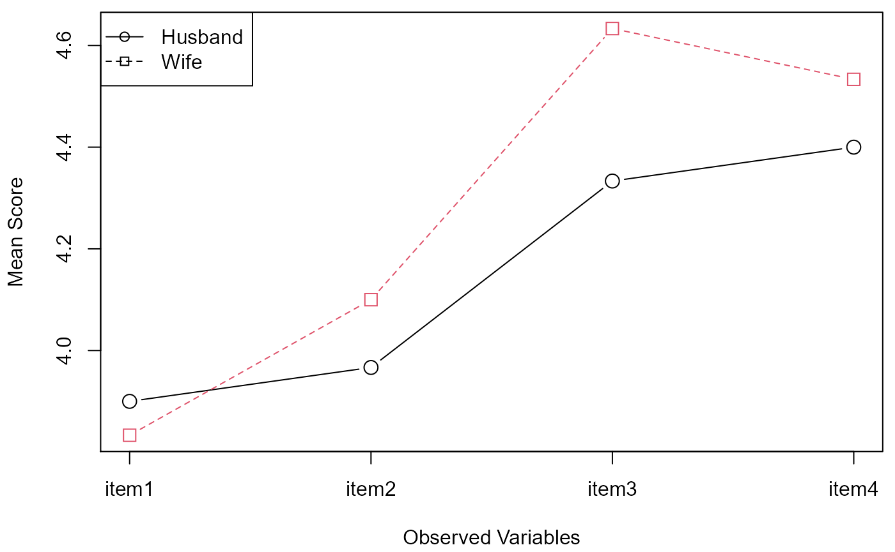
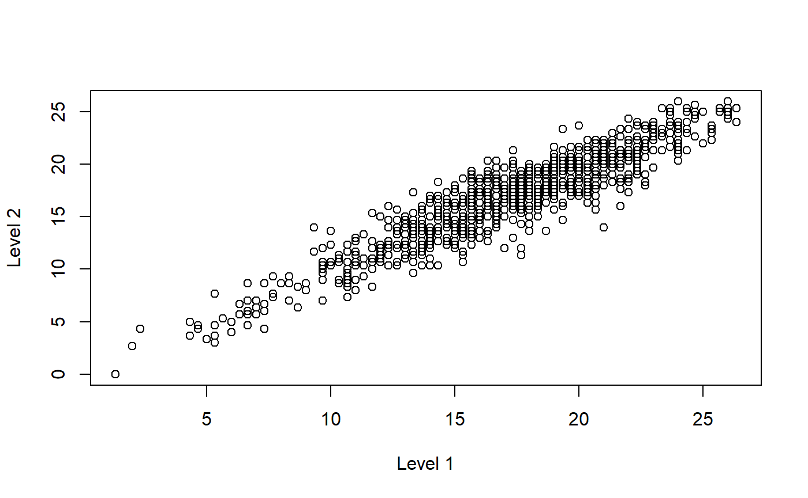

checking_profiler.RmdThe output from all the examples in profileR is included
in this vignette. This vignette can be built to verify there are no
problems with the code and can be used to compare your results against
the results published on the wiki.
If there are any discrepancies, please open an issue on GitHub.
library(profileR)
#> Loading required package: ggplot2
#> Warning: package 'ggplot2' was built under R version 4.0.5
#> Loading required package: RColorBrewer
#> Loading required package: reshape
#> Loading required package: lavaan
#> Warning: package 'lavaan' was built under R version 4.0.5
#> This is lavaan 0.6-9
#> lavaan is FREE software! Please report any bugs.
example(cpa, run.dontrun = TRUE)
#>
#> cpa> data(IPMMc)
#>
#> cpa> mod <- cpa(R ~ A + H + S + B, data = IPMMc)
#>
#> cpa> print(mod)
#> Call:
#> cpa(formula = R ~ A + H + S + B, data = IPMMc)
#>
#> Coefficients
#>
#> Call: glm(formula = formula, family = family, data = data, na.action = na.action)
#>
#> Coefficients:
#> (Intercept) A H S B
#> 0.500000 0.009231 0.023077 -0.009231 -0.023077
#>
#> Degrees of Freedom: 5 Total (i.e. Null); 1 Residual
#> Null Deviance: 1.5
#> Residual Deviance: 0.04615 AIC: -0.1779
#>
#> cpa> summary(mod)
#> Call:
#> cpa(formula = R ~ A + H + S + B, data = IPMMc)
#>
#> Relability
#> R2
#> Full Model 0.969231
#> Pattern 0.969231
#> Level 0.000000
#>
#> Level Component
#> 1 2 3 4 5 6
#> 58.75 58.75 55.00 58.75 58.75 55.00
#>
#> Pattern Component
#> A H S B
#> 1 16.25 1.25 -8.75 -8.75
#> 2 1.25 16.25 -13.75 -3.75
#> 3 5.00 5.00 0.00 -10.00
#> 4 -8.75 -8.75 16.25 1.25
#> 5 -13.75 -3.75 1.25 16.25
#> 6 0.00 -10.00 5.00 5.00
#>
#> cpa> plot(mod)#>
#> cpa> anova(mod)
#> Call:
#> cpa(formula = R ~ A + H + S + B, data = IPMMc)
#>
#> Analysis of Variance Table
#>
#> df1 df2 F value Pr(>F)
#> R2.full = 0 4 1 7.87500e+00 0.2604188
#> R2.pat = 0 3 1 1.05000e+01 0.2221903
#> R2.lvl = 0 1 1 0.00000e+00 1.0000000
#> R2.full = R2.lvl 3 1 1.05000e+01 0.2221903
#> R2.full = R2.pat 1 1 -7.21645e-15 1.0000000leisure dataset
example(leisure, run.dontrun = TRUE)
#>
#> leisur> data(leisure)
example(mpa, run.dontrun = TRUE)
#>
#> mpa> data(mod_data)
#>
#> mpa> mod <- mpa(gpa ~ satv * major + satq * major, moderator = "major", data = bacc2001)
#> # -------- Executing Stage 1 -------- #
#> # -------- Executing Stage 2 -------- #
#>
#> mpa> summary(mod$output)
#>
#> Call:
#> lm(formula = resp ~ 1 + level.ref + level.focal + pat.ref + pat.diff +
#> z, data = model.data)
#>
#> Residuals:
#> Min 1Q Median 3Q Max
#> -143.511 -25.249 1.599 26.844 132.269
#>
#> Coefficients:
#> Estimate Std. Error t value Pr(>|t|)
#> (Intercept) 203.95852 10.18220 20.031 < 2e-16 ***
#> level.ref 0.21458 0.01786 12.014 < 2e-16 ***
#> level.focal -0.02860 0.02969 -0.963 0.336
#> pat.ref 2.00000 1.21898 1.641 0.101
#> pat.diff 2.00000 0.50062 3.995 6.91e-05 ***
#> z -3.56317 18.10308 -0.197 0.844
#> ---
#> Signif. codes: 0 '***' 0.001 '**' 0.01 '*' 0.05 '.' 0.1 ' ' 1
#>
#> Residual standard error: 40.78 on 1074 degrees of freedom
#> Multiple R-squared: 0.1867, Adjusted R-squared: 0.1829
#> F-statistic: 49.3 on 5 and 1074 DF, p-value: < 2.2e-16
#>
#>
#> mpa> mod$f.table
#> F.stat df1 df2 p-value
#> 1.596045e+01 1.000000e+00 1.074000e+03 6.908838e-05
#>
#> mpa> summary(mod$moder.model)
#>
#> Call:
#> lm(formula = formula, data = data, na.action = na.action)
#>
#> Residuals:
#> Min 1Q Median 3Q Max
#> -143.511 -25.249 1.599 26.844 132.269
#>
#> Coefficients:
#> Estimate Std. Error t value Pr(>|t|)
#> (Intercept) 203.95852 10.18220 20.031 < 2e-16 ***
#> satv 0.13776 0.01851 7.444 2.0e-13 ***
#> majorstem -3.56317 18.10308 -0.197 0.844000
#> satq 0.07683 0.02251 3.414 0.000665 ***
#> satv:majorstem -0.12770 0.02849 -4.482 8.2e-06 ***
#> majorstem:satq 0.09910 0.03522 2.814 0.004984 **
#> ---
#> Signif. codes: 0 '***' 0.001 '**' 0.01 '*' 0.05 '.' 0.1 ' ' 1
#>
#> Residual standard error: 40.78 on 1074 degrees of freedom
#> Multiple R-squared: 0.1867, Adjusted R-squared: 0.1829
#> F-statistic: 49.3 on 5 and 1074 DF, p-value: < 2.2e-16
example(pams, run.dontrun = TRUE)
#>
#> pams> data(PS)
#>
#> pams> result <- pams(PS[,2:4], dim=2)
#>
#> pams> result
#> $weights.matrix
#> weight1 weight2 level R.sq
#> [1,] 1.5 0.00000 70 1
#> [2,] 1.5 0.00000 40 1
#> [3,] 0.0 2.12132 70 1
#> [4,] 0.0 2.12132 40 1
#> [5,] -1.5 0.00000 70 1
#> [6,] -1.5 0.00000 40 1
#>
#> $dimensional.configuration
#> Dimension1 Dimension2
#> Neu -6.666667 -2.357023
#> Psy 0.000000 4.714045
#> CD 6.666667 -2.357023
example(paos, run.dontrun = TRUE)
#>
#> paos> data(nutrient)
#>
#> paos> paos(nutrient, scale=TRUE)
#> T-Squared F df1 df2
#> Ho: Ratios of the means over Mu0=1 1392.347 276.9559 5 732
#> Ho: All of the ratios are equal to each other 1278.073 318.2159 4 733
#> p-value
#> Ho: Ratios of the means over Mu0=1 0
#> Ho: All of the ratios are equal to each other 0
example(pbg, run.dontrun = TRUE)
#>
#> pbg> data(spouse)
#>
#> pbg> mod <- pbg(data=spouse[,1:4], group=spouse[,5], original.names=TRUE, profile.plot=TRUE)
#>
#> pbg> print(mod) #prints average scores in the profile across two groups
#>
#> Data Summary:
#> Husband Wife
#> item1 3.900000 3.833333
#> item2 3.966667 4.100000
#> item3 4.333333 4.633333
#> item4 4.400000 4.533333
#>
#> pbg> summary(mod) #prints the results of three profile by group hypothesis tests
#> Call:
#> pbg(data = spouse[, 1:4], group = spouse[, 5], original.names = TRUE,
#> profile.plot = TRUE)
#>
#> Hypothesis Tests:
#> $`Ho: Profiles are parallel`
#> Multivariate.Test Statistic Approx.F num.df den.df p.value
#> 1 Wilks 0.8785726 2.579917 3 56 0.06255945
#> 2 Pillai 0.1214274 2.579917 3 56 0.06255945
#> 3 Hotelling-Lawley 0.1382099 2.579917 3 56 0.06255945
#> 4 Roy 0.1382099 2.579917 3 56 0.06255945
#>
#> $`Ho: Profiles have equal levels`
#> Df Sum Sq Mean Sq F value Pr(>F)
#> group 1 0.234 0.2344 1.533 0.221
#> Residuals 58 8.869 0.1529
#>
#> $`Ho: Profiles are flat`
#> F df1 df2 p-value
#> 1 8.18807 3 56 0.0001310162
example(pr, run.dontrun = TRUE)
#>
#> pr> data(EEGS)
#>
#> pr> result <- pr(EEGS[,c(1,3,5)],EEGS[,c(2,4,6)])
#>
#> pr> print(result)
#> Subscore Reliability Estimates:
#>
#> Estimate
#> Level 0.9245548
#> Pattern 0.9338338
#> Overall 0.9308374
#>
#> pr> plot(result)
spouse dataset
example(spouse, run.dontrun = TRUE)
#>
#> spouse> data(spouse)
example(wprifm, run.dontrun = TRUE)
#>
#> wprifm> data <- HolzingerSwineford1939[,7:ncol(HolzingerSwineford1939)]
#>
#> wprifm> wprifm(data, scale = TRUE)
#> lavaan 0.6-9 ended normally after 21 iterations
#>
#> Estimator ML
#> Optimization method NLMINB
#> Number of model parameters 20
#> Number of equality constraints 1
#>
#> Number of observations 301
#>
#> Model Test User Model:
#>
#> Test statistic 158.922
#> Degrees of freedom 26
#> P-value (Chi-square) 0.000